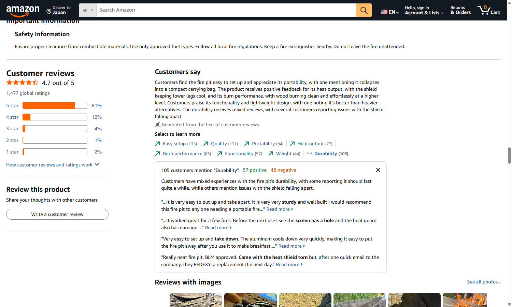
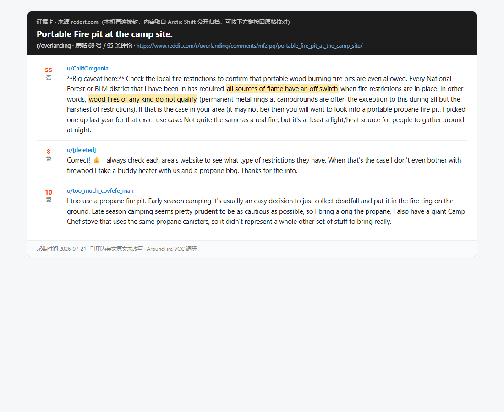
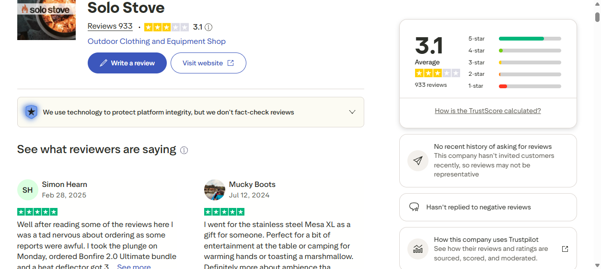
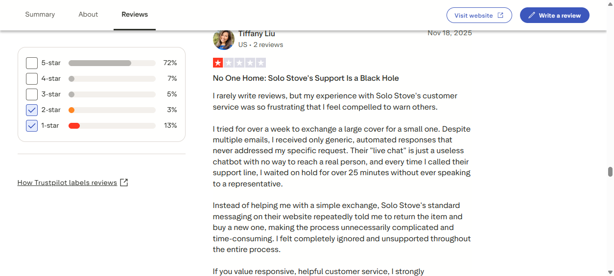
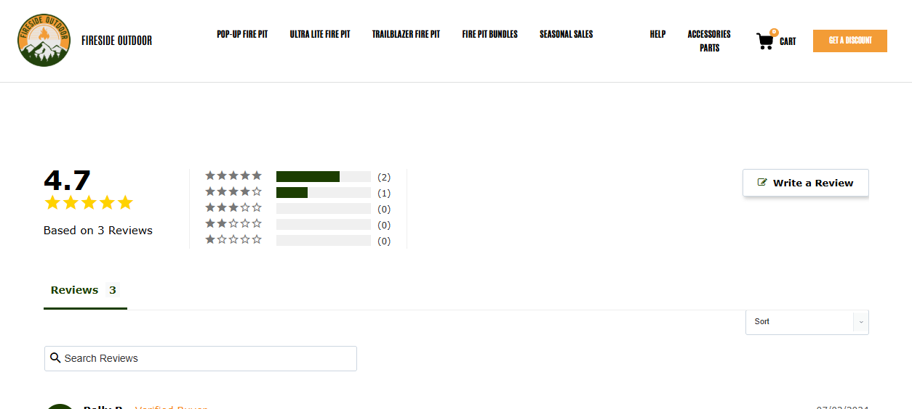
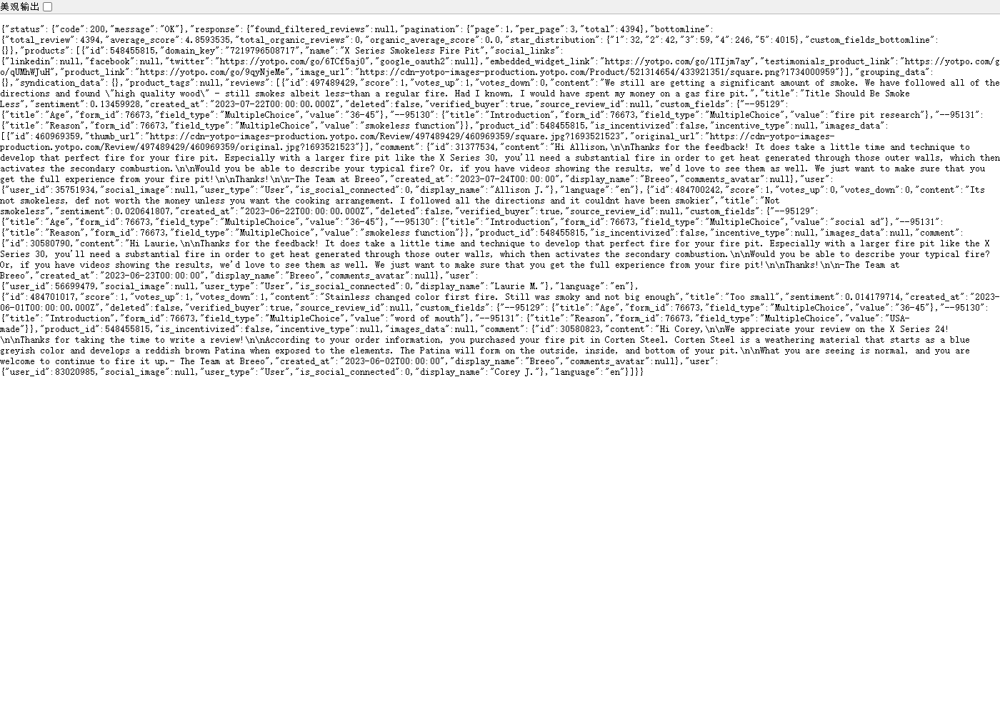
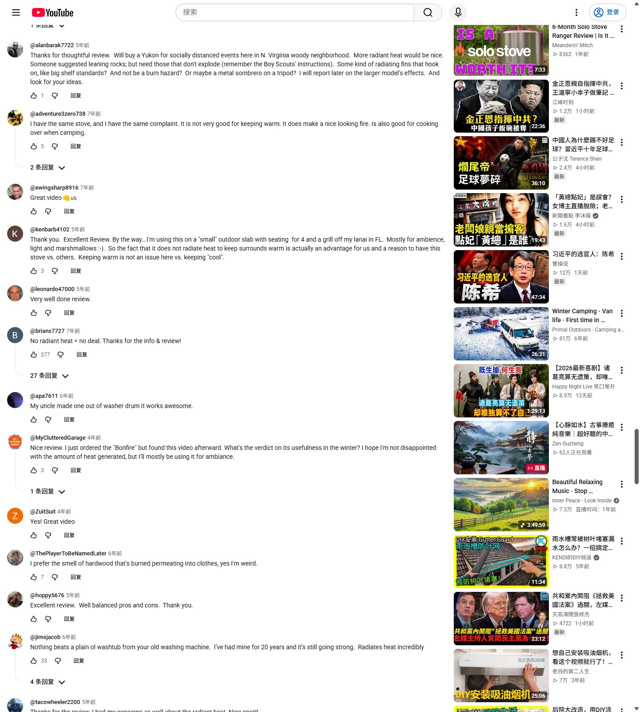
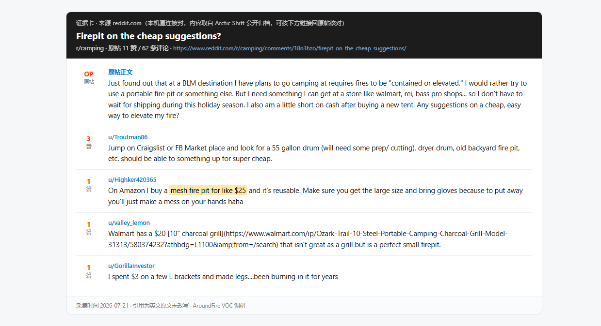
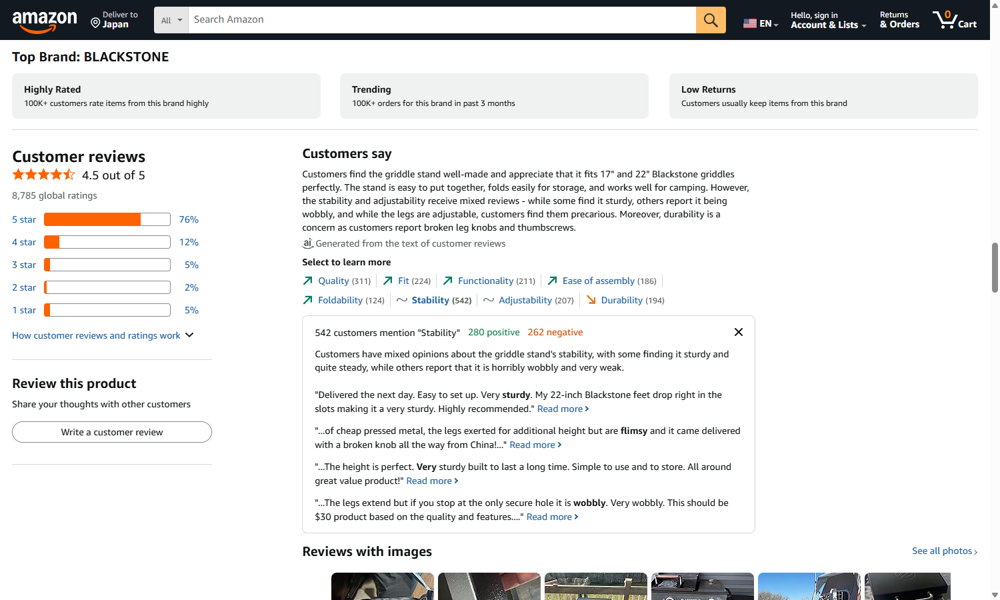

这一页只干一件事：把成千上万条用户评论，翻译成甲方 AroundFire 能直接照着做的动作——先分清「谁是甲方、谁是竞品、哪些只是行话」，再把每一条洞察落到页面优化 / Meta 广告文案 / 广告素材 / 关键词四个动作上。
数据全部来自本报告的真实采集：Amazon 官方属性统计 · Reddit 1,271 条语料 · YouTube 2,273 条评论 · Trustpilot & 竞品官网实抓负评 226 条 · AroundFire 众筹 541 backers 反馈。没有一条评论、数字、品牌是编的；抓不到的已如实声明。
看后面任何内容之前，先花一分钟记住这三类角色。本页之后每次出现品牌名，都会带一个小标签：甲方=我们要帮的品牌，竞品=对手，产品术语=行业黑话（不是品牌）。
AroundFire 甲方 —— 本尊，卖便携烧烤火盆桌（一张桌子，中间能烧火/烤肉，还能当聚会桌，16–20 lbs 一个包背走）。官网 aroundfire.co。它自己的产品线：
每个一句话说清：是谁 + 卖什么 + 价位。其中 Fireside 和甲方结构最像（都是火网结构），最值得盯。
下面这些不是谁家的牌子，是整个品类的通用词，看到别当成品牌名。
官方自己承认 Fire Mesh（火网）寿命"至少 50 次"；众筹买家 Ted 质疑后，官方回复 "we are actively exploring metal solutions to address durability concerns"。同结构的 Fireside 竞品 火网 durability（耐久性）差评率 46%（Amazon 官方统计），有买家原话 "the screen has a hole"（网破了个洞）。
来源：AroundFire 众筹官方回复 + Amazon 对 Fireside 的官方属性统计。
众筹买家 Fabrizio 原话："Mine seem to wobble and look flimsy..not sure I want to be playing around fire with those on."（晃、看着单薄，不太敢在火边用加高腿。）
来源：AroundFire 众筹买家反馈。对应 Amazon 品类 stability（稳固性）48% 负面。
众筹期就催生了 70cm 加高腿 SKU；同类产品 YouTube 有 355 赞评论 "看得我膝盖疼"（坐地上做饭太低）。
来源：AroundFire 众筹 + YouTube 同类产品评论。
众筹阶段发生 3 起：漏发螺丝、盒内无说明书、配件藏侧袋被误判漏发。在 Amazon 这种「差评即销量」的环境里，同样的失误会直接砸星级。
来源：AroundFire 众筹阶段实际事件。属流程问题、可控。
甲方用 "less smoke"（少烟）比竞品的 "smokeless"（无烟）安全，但需要在详情页前置说明「要多大火 / 什么木柴 / 多久起效」，否则用户会拿"无烟"标准来失望。
来源：对照竞品「无烟」差评（45%）反推的预防动作。
官方承认火网 "does not prevent liquid from passing through"——韩式烤肉的油会顺着火网漏到地上。
来源：AroundFire 众筹官方说明。
$24.90（约 ¥180）运费无免邮门槛，要填完地址才在结账页冒出来——和众筹期的投诉同源。
来源：AroundFire 结账实测 + 众筹投诉。详见「网站诊断与优化」。


竞品栽在哪，就是甲方能补的缺口。先看合并后的跨品牌差评排行，再看各家代表性原话。
| 排名 | 差评是什么 | 占 226 条 | 对甲方意味着什么 |
|---|---|---|---|
| 1 | "无烟"名不副实，依然呛烟 | 45% | 别碰 smokeless 这个词，老实说 less smoke |
| 2 | 客服联系不上 / 只有机器人 | 17% | 真人客服是最便宜的差异化 |
| 3 | 价格贵 / 配件另收费 | 16% | 该标配的别再拆开卖 |
| 4 | 生锈、变形 | 14% | 用材质/工艺规格正面回应 |
| 5 | 发货延迟 | 9% | 履约体验要写进承诺 |
| — | 服务与履约类合计（客服17%+物流9%+退款9%+破损8%） | 43% | 这是竞品最大的缺口，也是甲方最好抢的地方 |
口径：Solo Stove Trustpilot 56 条 + Breeo 站内 141 条 + Nomad 站内 29 条合并；一条可命中多主题，非互斥。



这是全页核心。每一行 = 一条评论洞察，横着读就是四个可执行动作：①页面怎么改 ②Meta 广告文案怎么写（附英文范例）③素材怎么拍 ④关键词怎么布。英文文案范例全部守住合规红线（尤其禁火令，只说 propane + 关阀 + 查当地规定，绝不说"legal everywhere"）。
| 评论洞察 | ① 页面优化 | ② Meta 广告文案（英文范例） | ③ 广告素材 | ④ 关键词布局 |
|---|---|---|---|---|
| 1 · 耐久 / 火网寿命是最大地雷 | 把「免费补件政策」（火网/螺丝/护盾坏了免费寄）写进详情页；做承重 + 钢材厚度实测规格表。 | "Mesh wears out? We ship you a new one — free." | 火网特写 + 更换演示（几秒钟换好）。 | durable fire pitreplaceable fire mesh |
| 2 · 竞品服务差（43%）是最大缺口 | 详情页放真人客服入口 + 24h 响应承诺 + 明确破损补发政策。 | "A real human answers. Broken in transit? New one ships same day." | 客服真人出镜 / 开箱补件的真实画面。 | 信任类不主投搜索，走再营销（对看过页面的人重复曝光）。 |
| 3 · "稳"比"轻"重要 | 首屏别只喊 16 lbs，加"靠着切菜不晃"实测。 | "Lean on it. Chop on it. It won't wobble." | 用力压桌面、在桌上切菜纹丝不动的镜头。 | sturdy camping table |
| 4 · "无烟"是竞品被骂最狠的点（45%） | 老实用 "less smoke" + 说明起效条件，别学竞品吹 smokeless。 | "Less smoke when you build it right — here's how." | 对比火候演示（火够大 vs 火太小的冒烟差别）。 | low smoke fire pit（避开 smokeless 红海） |
| 5 · 禁火令季节归零 | 把埋在下拉框的燃气版拎成独立落地页（已做，见 燃气版落地页设计稿）。 | "Propane with a shut-off valve — permitted under many Stage 1 & 2 fire restrictions. Check your local rules." 合规红线：只说带关阀丙烷、许多一二级禁令下可用、查当地规定；绝不说 fire-ban proof / legal everywhere。 |
禁火令告示牌旁，丙烷炉正常点火使用的画面。 | propane fire pitfire pit for burn ban |
| 6 · 价格锚是 $20–30 的 DIY | 不降价，用"它替代了三件装备"的收纳对比图讲值。 | "One bag replaces your grill, fire pit, and table." | 三件装备一大堆 vs 一个包的对比镜头。 | 打功能词，不打便宜词（别去抢 cheap fire pit）。 |
| 7 · 做饭+取暖是买点、氛围不是 | 页面把做饭和取暖顶到最前，氛围往后放。 | "Cook a full meal. Stay warm after." | 做一整桌饭 → 饭后围着取暖的完整场景。 | portable grill fire pitcooking fire pit table |
| 8 · 同结构 Fireside 靠快速补件救回 5 星 | 直接抄这个服务动作：破损/缺件承诺"次日补发"，写进详情页 + 售后条款。 | "Something arrived damaged? One email, new part ships next day." | 真实补件邮件 → 次日到货的开箱见证。 | 同洞察 2，走信任/再营销，不主投搜索。 |



